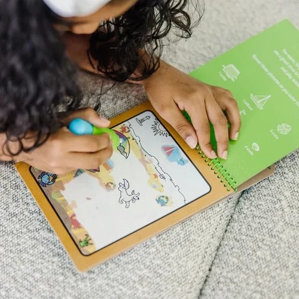
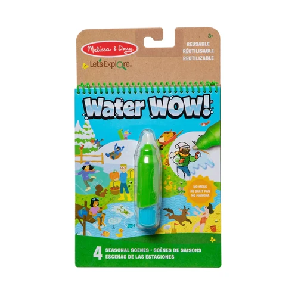
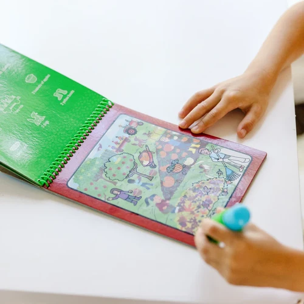
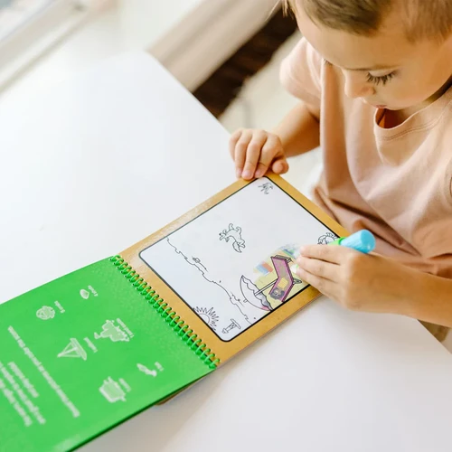
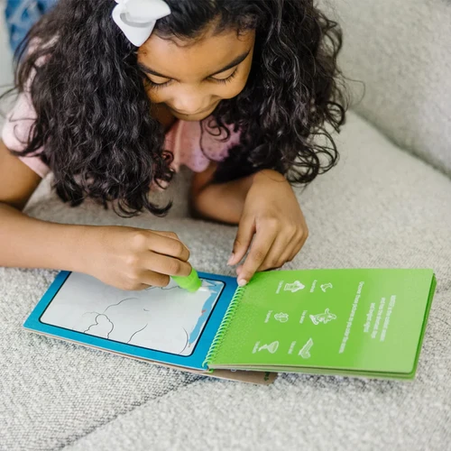
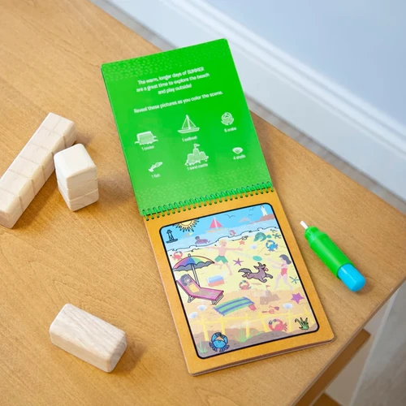

Let’s Explore Water Wow Seasons
Books
R1404 spiral-bound seasons-themed coloring boards (winter, spring, summer, fall) and a refillable water penReusable pages are white with simple line drawings when dry; reveal colors and patterns when wetChunky-size water pen is easy to fill, easy to hold, stores in compact, spiral-bound book--great for travelLet’s Explore by Melissa & Doug encourages kids to connect with the natural world through imaginative play, and to discover the joy of outdoor adventures that instill curiosity and confidence while inspiring them to say, “Let’s Explore”Makes a great gift for preschoolers, ages 3-5, for hands-on, screen-free playItem # 30820
Enquire about this product




Let’s Explore Water Wow Seasons at Kids Corner KZN
Let’s Explore Water Wow Seasons is part of our Books collection. Kids Corner KZN stocks toys for learning, pretend play, creative play, gifting and everyday childhood discovery in South Africa.
Browse more Books toys